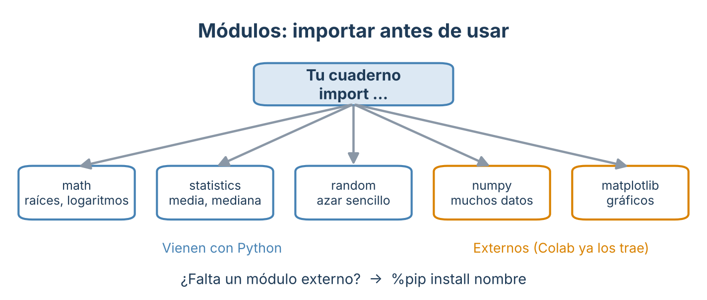
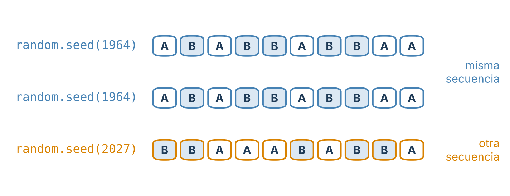
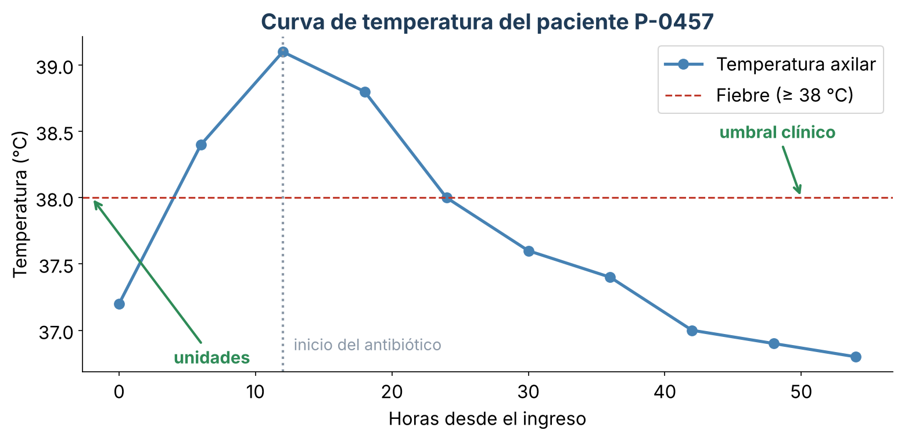

Bioestadística (1964) · Grado en Medicina · Curso 2027-2028
Tema 60Módulos científicos, generación de números aleatorios y visualización básica con Matplotlib
Módulo 2. Programando con IA
Fernando Borrás Rocher · Universidad Miguel Hernández de Elche · CC BY 4.0
Objetivos de aprendizaje
Al terminar esta sesión serás capaz de:
- Importar módulos de Python y usar sus funciones (
math,statistics,random,numpy). - Generar números aleatorios de forma reproducible con una semilla.
- Aleatorizar la asignación de pacientes a los brazos de un ensayo clínico.
- Simular mediciones clínicas con una distribución normal.
- Construir con Matplotlib gráficos de líneas, barras, histogramas y dispersión correctamente rotulados.
- Reconocer los errores más frecuentes que hacen que un gráfico engañe.
Cómo usar esta presentación
Usa el selector de arriba para dar el tema en una sesión completa o en dos sesiones intercaladas.
🎓 Sesión de clase magistral
- 1. Caso clínico de partida 5 min
- 2. Conceptos clave 10 min
- 5. Autoevaluación 5 min
Explica los conceptos, haz la pausa activa y cierra con las ideas clave.
💻 Sesión de Colab
- 3. Demostración: azar y gráficos 20 min
- 4. Práctica en la app Bioestadística 10 min
- 5. Autoevaluación 5 min
Cada estudiante abre su copia del cuaderno, predice el resultado y después ejecuta la celda.
Teclas: ← → para pasar · N notas del profesor · M cambiar de modo · F pantalla completa · Esc índice.
1. Caso clínico de partida
Un servicio de Neumología diseña un ensayo clínico para comparar dos pautas de fisioterapia respiratoria en pacientes con EPOC. Van a participar 20 pacientes. El comité de ética exige que la asignación a cada pauta sea aleatoria: ni el investigador ni el paciente la eligen.
¿Por qué? Si el investigador eligiera, tendería sin querer a dar la pauta nueva a quien cree que responderá mejor. Entonces la comparación quedaría sesgada. El azar reparte por igual, en promedio, todas las características de los pacientes, también las que no se han medido.
Además, cuando terminen el estudio querrán ver la evolución de cada paciente de un vistazo. Hoy aprenderemos a usar el azar de forma controlada y reproducible, y a representar datos clínicos con gráficos.
2. Conceptos clave
Un gráfico que cambió los hospitales

- En azul, las muertes por enfermedades evitables; en rojo, por heridas: la mayoría morían de lo primero.
- Con este gráfico Nightingale consiguió reformas sanitarias en los hospitales militares.
- Un buen gráfico clínico se entiende sin explicarlo.
2. Conceptos clave
2.1 Módulos

Un módulo es un archivo con funciones listas para usar. Python incluye muchos de serie y se pueden instalar otros. Para usarlos hay que importarlos:
| Forma | Ejemplo | Uso posterior |
|---|---|---|
| Importar el módulo | import math |
math.sqrt(16) |
| Importar con un alias | import numpy as np |
np.mean(datos) |
| Importar una función | from statistics import median |
median(datos) |
| Módulo | Para qué lo usaremos |
|---|---|
math |
Funciones matemáticas: raíces, logaritmos, exponenciales |
statistics |
Estadísticos básicos: media, mediana, desviación típica |
random |
Números aleatorios sencillos |
numpy |
Cálculo numérico con muchos datos y generación aleatoria avanzada |
matplotlib |
Gráficos |
Colab ya trae instalados todos estos. Un módulo externo que no esté instalado se instala con %pip install nombre.
2. Conceptos clave
2.2 Aleatoriedad y semilla
Azar reproducible: la semilla

- El ordenador genera números pseudoaleatorios a partir de una semilla.
- Misma semilla → misma secuencia: la aleatorización se puede auditar y repetir.
- En un ensayo, el azar reparte por igual lo que se ha medido y lo que no.
2. Conceptos clave
2.3 Un buen gráfico clínico
Lo que no puede faltar en un gráfico clínico

- Título que diga qué se ve; ejes con unidades; leyenda si hay varias series.
- Referencias clínicas (umbrales) cuando ayudan a interpretar.
Pausa activa
Piensa 30 segundos, comenta con quien tienes al lado y vota.
¿Para qué se fija una semilla al aleatorizar los pacientes de un ensayo?
En la sesión de Colab
Lo que acabas de ver se comprueba con datos en el cuaderno del Tema 60.
- Abre el cuaderno y guarda tu copia: Archivo → Guardar una copia en Drive.
- Ejecuta la celda de configuración.
- Ve a la demostración y predice cada resultado antes de ejecutar.
3. Demostración: azar y gráficos
3.1 El módulo math
▶ En tu cuaderno: 3.1 El módulo math. Antes de ejecutar, escribe qué esperas obtener.
import math
print("Raíz cuadrada de 3,08:", math.sqrt(3.08))
print("Logaritmo neperiano de 10:", math.log(10))
print("Número e:", math.e)Aplicación: la fracción de fármaco que queda tras un tiempo t con una constante de eliminación k es $e^{-kt}$.
k_por_hora = 0.1155 # corresponde a una vida media de unas 6 horas
horas = 12
fraccion_restante = math.exp(-k_por_hora * horas)
print(f"Queda el {fraccion_restante:.0%} del fármaco a las {horas} h")3. Demostración: azar y gráficos
3.2 El módulo statistics
▶ En tu cuaderno: 3.2 El módulo statistics. Antes de ejecutar, escribe qué esperas obtener.
from statistics import mean, median, stdev
estancias_dias = [3, 5, 4, 2, 21, 6, 4, 3, 5]
print("Media:", round(mean(estancias_dias), 1), "días")
print("Mediana:", median(estancias_dias), "días")
print("Desviación típica:", round(stdev(estancias_dias), 1), "días")La media (5,9 días) está muy por encima de la mediana (4 días) por un solo paciente con 21 días de estancia. En el Tema 120 veremos cuándo conviene cada medida.
3. Demostración: azar y gráficos
3.3 Aleatorizar un ensayo clínico
▶ En tu cuaderno: 3.3 Aleatorizar un ensayo clínico. Antes de ejecutar, escribe qué esperas obtener.
Para asignar 10 pacientes a cada pauta, crea una lista con 10 etiquetas «A» y 10 «B». Después, barájala con random.shuffle(). La semilla hace que la asignación se pueda reproducir y auditar.
import random
random.seed(1964)
asignaciones = ["A"] * 10 + ["B"] * 10
random.shuffle(asignaciones)
for numero, pauta in enumerate(asignaciones, start=1):
print(f"Paciente {numero:02d}: pauta {pauta}")Vuelve a ejecutar la celda: sale la misma asignación, porque la semilla es la misma. Cambia la semilla y obtendrás otra distinta.
Otras funciones útiles del módulo random:
random.seed(2027)
print("Número decimal entre 0 y 1:", random.random())
print("Entero entre 1 y 6:", random.randint(1, 6))
print("Elección al azar:", random.choice(["Cardiología", "Neumología", "Digestivo"]))
print("Muestra de 3 sin repetición:", random.sample(range(1, 101), 3))3. Demostración: azar y gráficos
3.4 Simular mediciones con numpy
▶ En tu cuaderno: 3.4 Simular mediciones con numpy. Antes de ejecutar, escribe qué esperas obtener.
Para simular muchas mediciones se usa el generador de numpy. La presión arterial sistólica de una población adulta se puede aproximar por una distribución normal con una media y una desviación típica dadas. La estudiaremos en el Tema 180.
import numpy as np
rng = np.random.default_rng(seed=1964)
pas_mmHg = rng.normal(loc=130, scale=15, size=500)
print("Primeras cinco:", pas_mmHg[:5].round())
print(f"Media simulada: {pas_mmHg.mean():.1f} mmHg")
print(f"Pacientes con PAS ≥ 140: {(pas_mmHg >= 140).sum()} de {len(pas_mmHg)}")3. Demostración: azar y gráficos
3.5 Gráfico de líneas: la curva de temperatura
▶ En tu cuaderno: 3.5 Gráfico de líneas: la curva de temperatura. Antes de ejecutar, escribe qué esperas obtener.
import matplotlib.pyplot as plt
horas = [0, 4, 8, 12, 16, 20, 24, 28, 32]
temperatura_c = [38.9, 39.2, 38.6, 38.1, 37.8, 37.4, 37.1, 36.9, 36.8]
plt.figure(figsize=(7, 4))
plt.plot(horas, temperatura_c, marker="o", label="Temperatura")
plt.axhline(38, color="red", linestyle="--", label="Umbral de fiebre (38 °C)")
plt.xlabel("Horas desde el inicio del antibiótico")
plt.ylabel("Temperatura (°C)")
plt.title("Paciente sintético 017: respuesta al tratamiento antibiótico")
plt.legend()
plt.grid(alpha=0.3)
plt.show()3. Demostración: azar y gráficos
3.6 Gráfico de barras: ingresos por servicio
▶ En tu cuaderno: 3.6 Gráfico de barras: ingresos por servicio. Antes de ejecutar, escribe qué esperas obtener.
servicios = ["Medicina Interna", "Cardiología", "Neumología", "Digestivo", "Neurología"]
ingresos = [142, 98, 87, 64, 51]
plt.figure(figsize=(7, 4))
plt.bar(servicios, ingresos, color="steelblue")
plt.ylabel("Número de ingresos")
plt.title("Ingresos por servicio en enero (datos sintéticos)")
plt.xticks(rotation=30, ha="right")
plt.show()3. Demostración: azar y gráficos
3.7 Histograma: distribución de la presión arterial
▶ En tu cuaderno: 3.7 Histograma: distribución de la presión arterial. Antes de ejecutar, escribe qué esperas obtener.
plt.figure(figsize=(7, 4))
plt.hist(pas_mmHg, bins=25, color="steelblue", edgecolor="white")
plt.axvline(140, color="red", linestyle="--", label="140 mmHg")
plt.xlabel("Presión arterial sistólica (mmHg)")
plt.ylabel("Número de pacientes")
plt.title("Distribución de la PAS en 500 pacientes sintéticos")
plt.legend()
plt.show()3. Demostración: azar y gráficos
3.8 Gráfico de dispersión: peso y talla
▶ En tu cuaderno: 3.8 Gráfico de dispersión: peso y talla. Antes de ejecutar, escribe qué esperas obtener.
talla_m = rng.normal(1.70, 0.09, size=200)
peso_kg = 22 * talla_m ** 2 + rng.normal(0, 8, size=200)
plt.figure(figsize=(6, 5))
plt.scatter(talla_m, peso_kg, alpha=0.6)
plt.xlabel("Talla (m)")
plt.ylabel("Peso (kg)")
plt.title("Relación entre talla y peso (200 adultos sintéticos)")
plt.show()Ampliación
Ampliación: guardar un gráfico
Un gráfico se guarda como imagen con plt.savefig() antes de plt.show(). El archivo aparece en el panel Archivos de la barra lateral, desde donde se descarga. Los archivos de esa carpeta se borran al cerrar la sesión.
plt.figure(figsize=(6, 4))
plt.bar(servicios, ingresos)
plt.ylabel("Número de ingresos")
plt.xticks(rotation=30, ha="right")
plt.tight_layout()
plt.savefig("ingresos_por_servicio.png", dpi=200)
plt.show()Ampliación
Ampliación: cómo engaña un gráfico
Los mismos datos pueden contar historias muy distintas según se dibujen. Si el eje vertical de un gráfico de barras no empieza en cero, una diferencia pequeña parece enorme.
tratamientos = ["Fármaco A", "Fármaco B"]
curacion_pct = [78, 81]
fig, ejes = plt.subplots(1, 2, figsize=(9, 3.5))
ejes[0].bar(tratamientos, curacion_pct)
ejes[0].set_ylim(76, 82)
ejes[0].set_title("Eje recortado: parece una gran diferencia")
ejes[0].set_ylabel("Curación (%)")
ejes[1].bar(tratamientos, curacion_pct)
ejes[1].set_ylim(0, 100)
ejes[1].set_title("Eje desde cero: diferencia de 3 puntos")
plt.tight_layout()
plt.show()Ampliación
Ampliación: errores frecuentes
Olvidar importar el módulo. Usar math.sqrt() sin import math produce NameError.
No fijar la semilla. Sin semilla, cada ejecución da resultados distintos y no se pueden reproducir ni revisar.
Ejes sin unidades. «Temperatura» no es suficiente: ¿grados Celsius o Fahrenheit?
Elegir mal el gráfico. Unir con líneas categorías sin orden (servicios hospitalarios) sugiere una evolución que no existe.
Recortar el eje de un gráfico de barras, como en el ejemplo anterior.
Ampliación
Ampliación: Una imagen médica es una matriz de NumPy
Una imagen en escala de grises es una matriz 2D: cada elemento es un píxel. En una tomografía computarizada (TAC), cada valor está en unidades Hounsfield (UH). El aire vale −1000, el agua 0 y el hueso cortical unos 700 o más.
Un TAC completo es una matriz 3D: una pila de cortes. Su forma es (cortes, filas, columnas).
La ventana decide qué valores se ven. Los valores por debajo de la ventana salen negros y los de encima salen blancos. Con np.clip() se aplica una ventana a toda la matriz en una sola operación.
En tus materiales SIMUSTAT: Tema 140. Procesado de imágenes 2D con NumPy, apartado 2. En tus materiales SIMUSTAT: Tema 150. Procesado de imágenes 3D con NumPy, apartado 2 (los TAC).
import numpy as np
import matplotlib.pyplot as plt
# Corte sintético de tórax: aire, tejido blando, dos pulmones y una costilla
filas, columnas = np.mgrid[0:200, 0:200]
corte = np.full((200, 200), -1000.0) # aire
cuerpo = ((filas - 100) / 80) ** 2 + ((columnas - 100) / 95) ** 2 < 1
corte[cuerpo] = 40 # tejido blando
for centro in (60, 140):
pulmon = ((filas - 95) / 50) ** 2 + ((columnas - centro) / 28) ** 2 < 1
corte[pulmon] = -800 # pulmón
anillo = np.abs(np.sqrt((filas - 100) ** 2 + (columnas - 100) ** 2) - 76) < 3
corte[anillo & cuerpo] = 700 # costilla
for f, col in [(70, 50), (90, 70), (115, 55), (75, 150), (100, 130), (120, 148)]:
corte[(filas - f) ** 2 + (columnas - col) ** 2 < 12] = -600 # vasos pulmonares
corte[(filas - 105) ** 2 + (columnas - 140) ** 2 < 30] = 40 # nódulo
print("Forma del corte:", corte.shape, "| mínimo:", corte.min(), "UH | máximo:", corte.max(), "UH")
def ventana(imagen, centro, anchura):
return np.clip(imagen, centro - anchura / 2, centro + anchura / 2)
fig, ejes = plt.subplots(1, 2, figsize=(9, 4.5))
for eje, (nombre, c_v, a_v) in zip(ejes, [("Ventana pulmonar", -600, 1500), ("Ventana de mediastino", 40, 400)]):
eje.imshow(ventana(corte, c_v, a_v), cmap="gray")
eje.set_title(f"{nombre} (C {c_v}, A {a_v})")
eje.axis("off")
plt.tight_layout()
plt.show()
tac = np.stack([corte] * 30) # 30 cortes iguales: un volumen 3D
print("Forma del volumen:", tac.shape)La misma matriz da dos imágenes distintas. La ventana pulmonar distingue los vasos dentro del pulmón. La de mediastino deja el pulmón en negro, pero el nódulo y el tejido blando se ven en gris. Los datos no cambian: cambia cómo se presentan.
4. Práctica en la app Bioestadística
Abre la unidad 60 de la app Bioestadística y completa sus misiones:
- Misión básica (sin asistente): elegir el gráfico adecuado para cada pregunta clínica.
- Misión clínica (con pistas): aleatorizar 30 pacientes en tres brazos con una semilla y comprobar que cada brazo tiene 10.
- Misión reto (con asistente): pedir al asistente el gráfico de evolución de la glucemia de un paciente. Revisar que cumple todas las normas de un buen gráfico clínico.
Al terminar, exporta el informe de la unidad.
5. Autoevaluación
Responde sin asistente y sin ejecutar código.
5. Autoevaluación
Elige una opción: verás la explicación.
¿Para qué se fija una semilla al aleatorizar los pacientes de un ensayo?
¿Qué gráfico es el más adecuado para mostrar la distribución de la glucemia en 300 pacientes?
Tras import numpy as np, ¿cómo se llama a la función mean?
Las estancias de 9 pacientes son 3, 5, 4, 2, 21, 6, 4, 3 y 5 días. ¿Qué medida representa mejor la estancia típica?
Un gráfico de barras compara curaciones del 78 % y del 81 % con el eje vertical entre 76 y 82. ¿Qué problema tiene?
Ideas clave
- Los módulos amplían Python: se importan con
importy se usan conmódulo.función(). - Los números aleatorios del ordenador dependen de una semilla: fijarla hace los resultados reproducibles.
- La aleatorización evita el sesgo de asignación en los ensayos clínicos.
- Cada tipo de variable tiene su gráfico; los ejes llevan siempre unidades y las barras empiezan en cero.
Glosario
| Término | Definición |
|---|---|
| Módulo | Archivo de Python con funciones que se pueden importar |
| Alias | Nombre corto con el que se importa un módulo (np, plt) |
| Número pseudoaleatorio | Número generado por un cálculo que imita el azar |
| Semilla | Valor inicial que determina la secuencia de números pseudoaleatorios |
| Aleatorización | Asignación al azar de los participantes a los grupos de un estudio |
| Sesgo de asignación | Distorsión de los resultados por elegir quién recibe cada tratamiento |
| Histograma | Gráfico de la distribución de una variable cuantitativa |
Para saber más
- Documentación del módulo random
- Documentación del módulo statistics
- Galería de ejemplos de Matplotlib
- SIMUSTAT Unidigital UMH. Tema 140. Procesado de imágenes 2D con NumPy. Cuaderno de Google Colab. Elche: Universidad Miguel Hernández; 2023.
- SIMUSTAT Unidigital UMH. Tema 150. Procesado de imágenes 3D con NumPy. Cuaderno de Google Colab. Elche: Universidad Miguel Hernández; 2023.